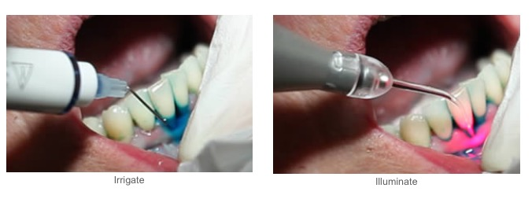

We pride ourselves with dedication to excellence by providing patients with the following services:
Preventive dentistry for children includes:
Why is preventive dentistry important?
Preventive dentistry means a healthy smile for your child. Children with healthy mouth chew more easily and gain more nutrients from the foods they eat. They learn to speak more quickly and clearly. They have a better chance of general health, because disease in the mouth can endanger the rest of the body. A healthy mouth is more attractive, giving children confidence in their appearance. Finally, preventive dentistry means less extensive, and less expensive, treatment for your child.
When should preventive dentistry start?
Preventive dentistry begins with the first tooth. The first dental visit should be when the child is comfortable with the process and at least the first tooth has erupted. The earlier the dental visit, the better the chance of preventing dental disease and helping your child become the cavity free generation.
What role do parents play in prevention?
After evaluating your child's dental health, your pediatric dentist will design a personal program of home care for your child. This program will include brushing and flossing instructions, diet counselling, and if necessary, fluoride recommendations. By following the directions, you can help give your child a lifetime of healthy habits.
How do pediatric dentists help prevent dental problems?
Tooth cleaning and polishing and fluoride treatments are all part of your child's preventive program. But there's much more. For example, your pediatric dentist can apply sealants to protect your child from tooth decay, help you select a mouth guard to prevent sports injuries to the face and teeth, and provide early diagnosis and care of orthodontic problems. Your pediatric dentist is uniquely trained to develop a combination of office and home preventive care to insure your child a happy smile.
Back to topA dental implant is a titanium post (like a tooth root) that is surgically positioned into the jawbone beneath the gum line that allows your dentist to mount replacement teeth or a bridge into that area. An implant doesn't come loose like a denture can.
If you want a dental restoration that looks and feels as though it's really part of your mouth, dental implants may be right for you. A dental implant is an artificial tooth root. Your jawbone fuses with the implant to provide a secure platform for a prosthesis (artificial tooth). If you are missing many teeth, several implants can be used to support a partial or complete denture.
Having a healthy mouth is just as important for implants as it is for natural teeth. If you don't have enough healthy bone or gum tissue in your mouth, you may need a graft before implants can be placed. Grafting helps build a solid foundation for the implants. You'll probably have to wait for a graft to heal before you can have implant surgery. If you have periodontal disease, it will also need to be treated prior to placing the implants.
Surgery is used to place implants in your jawbone. Ultimately, successful dental implants depend on the jawbone fusing to the implant (a process called osseointegration). You can help this process along by keeping your gums and teeth especially clean over the next few months.
When your gums have healed around the abutments, your restorative dentist will begin making your permanent prosthesis. Several office visits may be needed to make a precise model of your mouth. Then it may take a few weeks, or even months, to build your prosthesis.
Underneath your tooth's outer enamel and within the dentin is an area of soft tissue called the pulp, which carries the tooth's nerves, veins, arteries and lymph vessels. Root canals are very small, thin divisions that branch off from the top pulp chamber down to the tip of the root. A tooth has at least one but no more than four root canals.
Depending on the number of teeth and severity affected, root canals usually require one to two visits not including any follow-up visits. Your dentist or endodontist will numb the area around the affected tooth. The tooth is then drilled to the pulp area either through the top or the back of the tooth. This is done so that the dentist can clean the entire canal, and so that enough of the filling material will be used to completely fill the canal. The actual measuring is done with either X-rays or electronic imaging devices.
All of the diseased pulp in the tooth is remove, and the canal is cleaned out thoroughly with an antiseptic solution. This solution will clean all of the canals within the tooth. The canals are then filled with gutta percha, a flexible plastic material. A temporary filling is then put on top of that. A crown or permanent filling will be done after there has been no sign of infection. Crowns are most common since the root canal procedure weakens the tooth. The crown is usually placed as soon as possible, within a month or less.
Expect two to three days of soreness after the procedure, or longer if the infection in the root canal was severe.
Back to topPeriodontal scaling and root planning is a conservative cleaning procedure meant to remove contamination and infection from beneath the gum. Scaling removes deposits of bacterial plaque, calculus, food debris, and pus that have accumulated in the infect pocket due to periodontitis. Root planning smoothes and cleans the root. This non-surgical treatment is often effective in allowing complete healing of early stages of periodontitis and may reduce the extent of surgical treatment needed when performed in more advanced stages of gum disease.
Periowave
Periowave is an effective, minimally invasive, antimicrobial and anti-inflammatory treatment. It uses the powerful photodisinfection reaction to inactivate the harmful bacteria and toxins that are left behind after scaling and root planing.
Photodisinfection is based on a simple, two-step procedure:

Back to topGrinding your teeth, an improper bite, age, fillings and tooth decay can all be contributing factors In the wearing down, cracking or breakage of your teeth. Dental crowns cover the entire visible surface of your affected tooth and add strength, durability and tooth stability. Your cosmetic dentist will make an impression of the tooth and a dental laboratory will create the crown. You will typically leave the office with a temporary crown to wear while the permanent crown is being made - this takes about two weeks. The permanent crown is then cemented onto your tooth. Typically, only two visits are required for this part of the procedure.
Often, a preliminary restoration of your tooth may be needed before a crown can be placed. To stabilize your tooth, a filling must first be put in place prior to placing a crown due to the loss of original tooth structure. Tooth crowns usually last seven to ten years.
Back to topA dental bridge is a false tooth, known as a pontic, which is fused between two porcelain crowns to fill in the area left by a missing tooth. The two crowns holding it in place that are attached onto your teeth on each side of the false tooth is known as a fixed bridge. This procedure is used to replace one or more missing teeth. Fixed bridges cannot be taken out of your mouth as you might do with removable partial dentures.
The dentist will first make an impression, which will serve as the model from which the bridge, false tooth and crowns will be made by a dental laboratory. A temporary bridge will be placed for you to wear while your bridge is being made until your next visit. This temporary bridge will serve to protect your teeth and gums.
On your second appointment, the temporary bridge will be removed. Your new permanent bridge will be fitted and checked and adjusted for night bite discrepancies. Your new bridge will then be cemented to your teeth.
Bridges can reduce your risk of gum disease, help correct some bite issues an even improve your speech. Bridges require your commitment to serious oral hygiene, but will last as many as ten years or more.
Back to topPorcelain Veneers
Porcelain veneers, also called laminates, are ultra-thin shells of ceramic, which are bonded to the front of teeth. This virtually painless procedure requires little or no anaesthesia, and can be the ideal choice for improving the appearance of the front teeth. Becoming increasingly popular in the past 12 years, tens of thousands of porcelain veneers have been placed to mask discolorations, to brighten teeth, and to improve a smile.
Highly resistant to permanent staining from coffee, tea, or even cigarette smoking, the porcelain veneers can achieve a tenacious bond to the tooth.
Tooth Bonding
Bonding is a composite resin filling placed in the back teeth as well as the front teeth. Composites are the solution for restoring decayed teeth, making cosmetic improvements and even changing the colour of your teeth or the reshaping of teeth. Bonding will lighten any stains you may have, close up minor gaps and can be used to correct crooked teeth.
The bonding process involves etching the tooth surface with a conditioning solution that allows the bonding material (composite resins) to adhere. To match your own teeth, various colour resins are carefully blended so the bonded tooth will look completely natural. After application, the resin is contoured into the proper shape and hardened using a special light or chemical process. It is then smoothed and polished to appear natural.
Pit and Fissure Sealants
Dentures replace missing teeth and their adjacent tissues with a removable dental appliance made of acrylic resin and, in some cases, a combination of metals.
What are the different types of dentures?
There are four primary types of dentures:
Oral health care and dentures:
{kind=link}
{kind=link}
{kind=link}
{kind=link}
{kind=link}
{kind=link}
{kind=link}
{kind=link}
{kind=link}
{kind=link}
{kind=link}